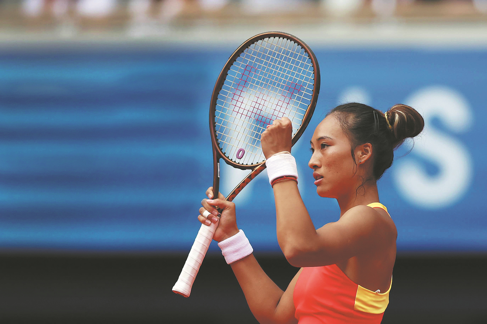
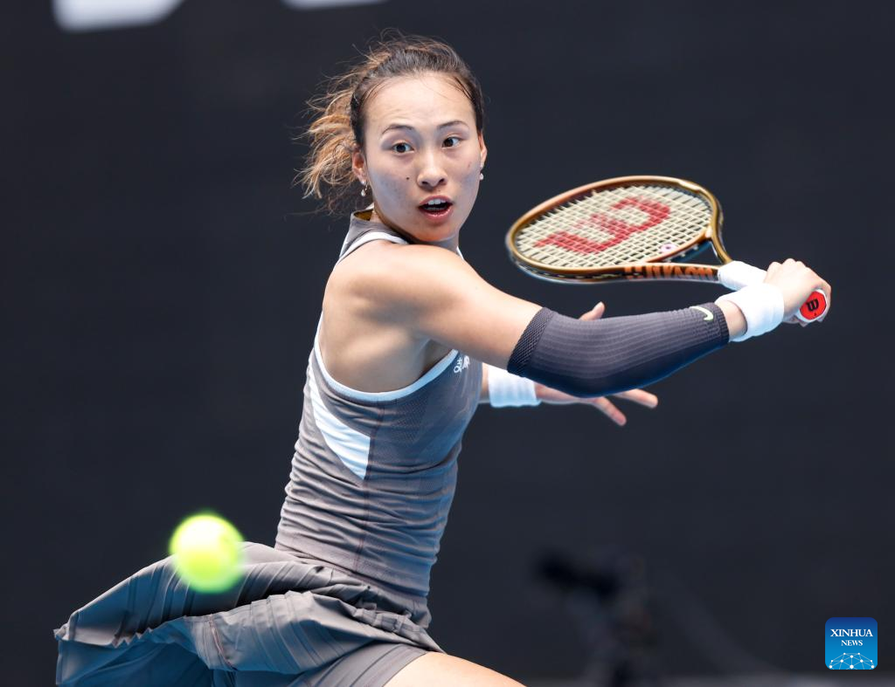

Zheng enjoys an ace season
Underlined by historic individual performances and surging public interest in the sport, Chinese
tennis has celebrated a remarkable year in 2024 with unprecedented success, on and off the court.
Leading the highlights, and arguably all other sporting feats in 2024, was Zheng Qinwen's
history-making Paris 2024 campaign, as she defied long odds to deliver Asia's first tennis singles
Olympic gold medal, and the second overall, to inspire a nationwide craze for a racket sport that
has long been overshadowed by table tennis and badminton in China. Zheng's Paris heroics, played
out on the red clay of Roland Garros in August, built on tennis legend Li Na's trailblazing first
major win in 2011 — also celebrated at the iconic French Open venue — convincing fans, retired
players and pundits alike that the sport's future is thriving and in good hands 10 years after
Li's retirement. It also marked a full-circle milestone for tennis promotion in a country where
Olympic success traditionally outranks achievements at all other events, which began with now
retired pair, Li Ting and Sun Tiantian, winning the women's doubles final at the Athens Games
in 2004. Zheng's compatriots Zhang Zhizhen and Wang Xinyu put the icing on the cake by winning
a silver medal in mixed doubles, helping the tennis squad stand out among all of China's
medal-laden programs at the Paris Games. Zheng got her breakout year off to a flying start
Down Under, with her first major final appearance at the Australian Open, followed by a
strong second half that saw her claim two titles at the WTA250 event in Palermo, Italy, and
in the WTA500 in Tokyo. She carried her Olympic momentum deep into the season, as she
reached her first WTA1000 final at home in Wuhan, before fighting her way to the
championship match in Riyadh on her WTA Finals debut, finishing the year at a career-high
world No 5. The 22-year-old also led all women on the Tour in total aces served (445) and
most three-set wins (21). .

Zheng ousted as Australian Open delivers first shock
Chinese tennis star Zheng Qinwen crashed out of the Australian Open after being knocked out in
straight sets by an aggressive Laura Siegemund of Germany in the second round on Wednesday.
Fifth seed Zheng's trusted serve let her down and she had no answers for the German veteran, who
prevailed 7-6 (3), 6-3 in two hours and 16 minutes at John Cain Arena.
It was a bitter disappointment for Zheng, whose hope of a maiden Grand Slam triumph was undone by
a first-serve percentage of just 56 percent.
Zheng, last year's finalist, had overcome a rusty performance against Romanian qualifier Anca Todoni in her
opener.
She was a strong favorite against 97th-ranked Siegemund, a wily veteran striving to make the third round in
Melbourne for a second time in three years.
Zheng hoped to come out of the blocks quickly after a sluggish start against Todoni. She showed off her
athleticism in the third game with swift court coverage, leading to a forehand winner.
But Siegemund proved formidable opposition forcing Zheng to fire aces and unleash winners after a marathon
third game.
Zheng failed to convert a breakpoint in the fourth and eighth games while she continued to struggle to hold
serve in the face of brilliant returns from Siegemund.
Zheng's serve finally cracked in the ninth game and she appeared poised to fall one set down until her
fighting qualities helped her break and level at 5-5.
But Zheng was powerless in the tiebreak and forced into errors by a relentless Siegemund hitting the lines
with precision.
A rattled Zheng was staring down the barrel after losing her serve to fall behind 0-2 in the second set. But
she broke in a nerve-jangling third game until falling apart in the fourth game on serve amid time violation
warnings.
Zheng tried to rally but Siegemund was not to be denied as she slumped to the ground in celebration.

Winter Sports Festival to be held on Russia-China border
On the Amur River border between Russia's Blagoveshchensk and China's Heihe, the International
Russian-Chinese Winter Sports Festival will be held on 22-23 February. The event includes
competitions in rallying, ice hockey, as well as new disciplines – phygital games and swimming.
The sports town will be located on the ice of the Amur River between the national flags of Russia
and China. Facilities will include a hockey box, a rally track, grandstands and warm tents for
participants and spectators. Live broadcasting of the festival will be available online, and a
large screen will be installed on the Blagoveshchensk embankment to broadcast the events. The
cultural programme of the festival will include the creation of a 50 by 35 metre international
postcard, which is already being designed by artists from Russia and China. In addition, fans
will be able to watch demonstrations by a motor racing team, which will complement the
spectacular competitions between Russian and Chinese athletes.
Russian Sports Minister Mikhail Degtyarev and Russian Minister for the Development of the Far
East and the Arctic Aleksey Chekunkov are expected to attend the event.
Atletico Madrid came back from a goal down to beat Bayern Leverkusen 2-1 with a late goal from Julio
Alvarez that puts the team very close to assuring its qualification for the last 16.
Alvarez won the game in the last minute when he ran onto a pass from Angel Correa as Bayer looked for a
winning goal and was caught with men pushing forward.
Atletico began by allowing Bayer to control the ball while sitting deep and looking to play on the break.
Atletico was reduced to 10 men after 24 minutes when midfielder Pablo Barrios was sent off after a VAR
review for a high challenge that saw him leave his studs on Nordi Mukiele's calf.
Mukiele then provided the cross for Piero Hincapie to nod Bayer ahead on the stroke of halftime. Atletico
was level against the run of play seven minutes into the second half when Alvarez ran onto a long ball,
held off the defense and scored with his left foot.
It was 10 against 10 with 15 minutes left to play when Hincapie was shown a second yellow for a push on
Giuliano Simeone, and with the extra space, Alvarez was able to score a goal that left Atletico with 15
points from seven games ahead of a visit to Saltzburg next week.
FC Barcelona booked its place in the last 16 of the competition after a dramatic 5-4 win away to Benfica
after trailing 4-2. Barca goalkeeper Wojciech Szczesny had a first half to forget as Vangelis Pavlidis
scored a hat-trick in the opening 30 minutes.
The Greek scored after a rapid counterattack in just two minutes. After Robert Lewandowski's penalty in
the ninth minute made it 1-1, Szczesny's horrible error gifted Pavlidis his second of the night.
The striker ran onto a through ball as the Barca defense pushed onto the halfway line. Instead of clearing
the ball, Szczesny smashed into Barca defender Alejandro Balde, leaving Pavlidis to run through and score
an open goal.
Zheng enjoys an ace season
Underlined by historic individual performances and surging public interest in the sport, Chinese
tennis has celebrated a remarkable year in 2024 with unprecedented success, on and off the court.
Leading the highlights, and arguably all other sporting feats in 2024, was Zheng Qinwen's
history-making Paris 2024 campaign, as she defied long odds to deliver Asia's first tennis singles
Olympic gold medal, and the second overall, to inspire a nationwide craze for a racket sport that
has long been overshadowed by table tennis and badminton in China. Zheng's Paris heroics, played
out on the red clay of Roland Garros in August, built on tennis legend Li Na's trailblazing first
major win in 2011 — also celebrated at the iconic French Open venue — convincing fans, retired
players and pundits alike that the sport's future is thriving and in good hands 10 years after
Li's retirement. It also marked a full-circle milestone for tennis promotion in a country where
Olympic success traditionally outranks achievements at all other events, which began with now
retired pair, Li Ting and Sun Tiantian, winning the women's doubles final at the Athens Games
in 2004. Zheng's compatriots Zhang Zhizhen and Wang Xinyu put the icing on the cake by winning
a silver medal in mixed doubles, helping the tennis squad stand out among all of China's
medal-laden programs at the Paris Games. Zheng got her breakout year off to a flying start
Down Under, with her first major final appearance at the Australian Open, followed by a
strong second half that saw her claim two titles at the WTA250 event in Palermo, Italy, and
in the WTA500 in Tokyo. She carried her Olympic momentum deep into the season, as she
reached her first WTA1000 final at home in Wuhan, before fighting her way to the
championship match in Riyadh on her WTA Finals debut, finishing the year at a career-high
world No 5. The 22-year-old also led all women on the Tour in total aces served (445) and
most three-set wins (21). .
Zheng ousted as Australian Open delivers first shock
Chinese tennis star Zheng Qinwen crashed out of the Australian Open after being knocked out in
straight sets by an aggressive Laura Siegemund of Germany in the second round on Wednesday.
Fifth seed Zheng's trusted serve let her down and she had no answers for the German veteran, who
prevailed 7-6 (3), 6-3 in two hours and 16 minutes at John Cain Arena.
It was a bitter disappointment for Zheng, whose hope of a maiden Grand Slam triumph was undone by
a first-serve percentage of just 56 percent.
Zheng, last year's finalist, had overcome a rusty performance against Romanian qualifier Anca Todoni in her
opener.
She was a strong favorite against 97th-ranked Siegemund, a wily veteran striving to make the third round in
Melbourne for a second time in three years.
Zheng hoped to come out of the blocks quickly after a sluggish start against Todoni. She showed off her
athleticism in the third game with swift court coverage, leading to a forehand winner.
But Siegemund proved formidable opposition forcing Zheng to fire aces and unleash winners after a marathon
third game.
Zheng failed to convert a breakpoint in the fourth and eighth games while she continued to struggle to hold
serve in the face of brilliant returns from Siegemund.
Zheng's serve finally cracked in the ninth game and she appeared poised to fall one set down until her
fighting qualities helped her break and level at 5-5.
But Zheng was powerless in the tiebreak and forced into errors by a relentless Siegemund hitting the lines
with precision.
A rattled Zheng was staring down the barrel after losing her serve to fall behind 0-2 in the second set. But
she broke in a nerve-jangling third game until falling apart in the fourth game on serve amid time violation
warnings.
Zheng tried to rally but Siegemund was not to be denied as she slumped to the ground in celebration.
Winter Sports Festival to be held on Russia-China border
On the Amur River border between Russia's Blagoveshchensk and China's Heihe, the International
Russian-Chinese Winter Sports Festival will be held on 22-23 February. The event includes
competitions in rallying, ice hockey, as well as new disciplines – phygital games and swimming.
The sports town will be located on the ice of the Amur River between the national flags of Russia
and China. Facilities will include a hockey box, a rally track, grandstands and warm tents for
participants and spectators. Live broadcasting of the festival will be available online, and a
large screen will be installed on the Blagoveshchensk embankment to broadcast the events. The
cultural programme of the festival will include the creation of a 50 by 35 metre international
postcard, which is already being designed by artists from Russia and China. In addition, fans
will be able to watch demonstrations by a motor racing team, which will complement the
spectacular competitions between Russian and Chinese athletes.
Russian Sports Minister Mikhail Degtyarev and Russian Minister for the Development of the Far
East and the Arctic Aleksey Chekunkov are expected to attend the event.